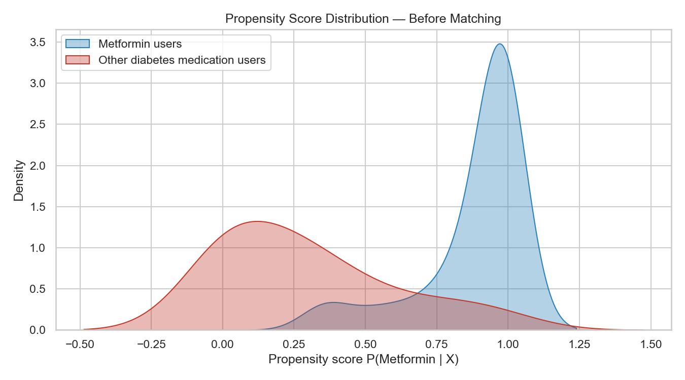
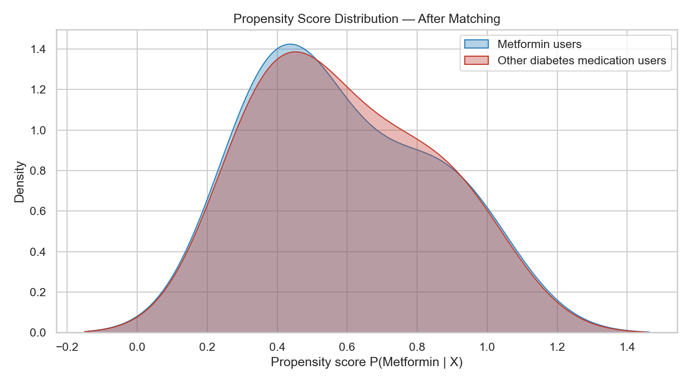
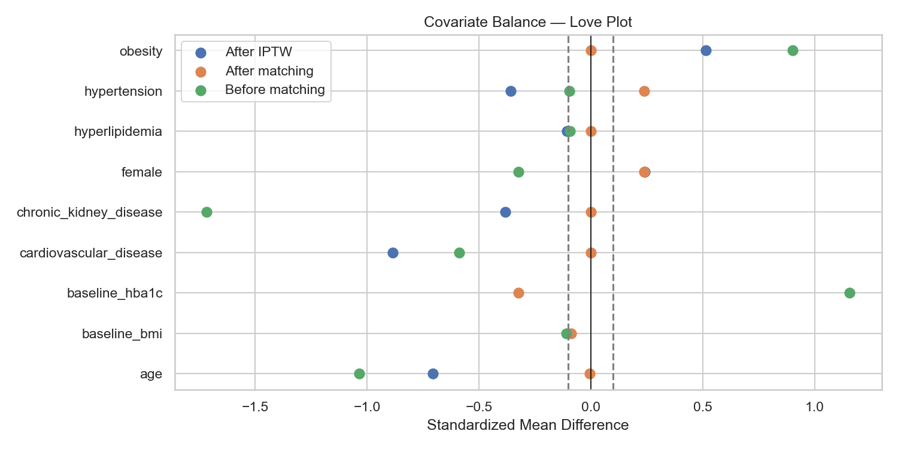
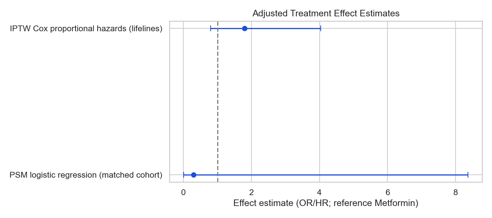

Step 6 — Propensity Score & Treatment Effect Estimation
Metformin users vs Other diabetes medication users | N = 69
Observational comparative effectiveness study using propensity score methods to estimate the causal effect of metformin vs other diabetes medications on the composite outcome of diabetes-related complications or hospitalization.
Baseline covariates measured at or before index_date (treatment initiation):
Continuous labs use the most recent pre-index value; missing HbA1c/BMI are median-imputed in the PS model. These variables are established confounders of diabetes treatment selection and complication risk.
Model: P(Treatment = Metformin | Covariates) via multivariable logistic regression (statsmodels GLM, robust SE). Matching: 1:1 nearest neighbor on logit PS with caliper 0.2 × SD(logit PS).
Generalized Linear Model Regression Results
===============================================================================
Dep. Variable: treatment_metformin No. Observations: 69
Model: GLM Df Residuals: 59
Model Family: Binomial Df Model: 9
Link Function: Logit Scale: 1.0000
Method: IRLS Log-Likelihood: -18.699
Date: Tue, 21 Jul 2026 Deviance: 37.398
Time: 18:49:47 Pearson chi2: 66.9
No. Iterations: 21 Pseudo R-squ. (CS): 0.4842
Covariance Type: HC1
==========================================================================================
coef std err z P>|z| [0.025 0.975]
------------------------------------------------------------------------------------------
const -32.7448 15.041 -2.177 0.029 -62.225 -3.264
age -0.0293 0.040 -0.729 0.466 -0.108 0.050
female 0.4690 0.793 0.591 0.554 -1.086 2.024
baseline_hba1c 3.4873 1.169 2.983 0.003 1.196 5.779
baseline_bmi -0.4254 0.591 -0.719 0.472 -1.585 0.734
hypertension -0.7909 0.775 -1.020 0.308 -2.310 0.728
cardiovascular_disease 1.7708 1.334 1.327 0.184 -0.844 4.386
obesity 25.0234 3.310 7.560 0.000 18.536 31.511
hyperlipidemia -2.1389 1.698 -1.259 0.208 -5.468 1.190
chronic_kidney_disease -4.4020 1.834 -2.401 0.016 -7.996 -0.808
==========================================================================================
Matched pairs: 8 (16 patients in matched cohort)
|SMD| < 0.1 indicates acceptable balance. Post-matching balanced covariates: 33.3%
| covariate | analysis_stage | smd | balanced |
|---|---|---|---|
| age | Before matching | -1.036 | False |
| female | Before matching | -0.322 | False |
| baseline_hba1c | Before matching | 1.157 | False |
| baseline_bmi | Before matching | -0.108 | False |
| hypertension | Before matching | -0.097 | True |
| cardiovascular_disease | Before matching | -0.587 | False |
| obesity | Before matching | 0.902 | False |
| hyperlipidemia | Before matching | -0.094 | True |
| chronic_kidney_disease | Before matching | -1.716 | False |
| age | After matching | -0.005 | True |
| female | After matching | 0.238 | False |
| baseline_hba1c | After matching | -0.323 | False |
| baseline_bmi | After matching | -0.088 | True |
| hypertension | After matching | 0.238 | False |
| cardiovascular_disease | After matching | 0.000 | True |
| obesity | After matching | 0.000 | True |
| hyperlipidemia | After matching | 0.000 | True |
| chronic_kidney_disease | After matching | 0.000 | True |
| age | After IPTW | -0.705 | False |
| female | After IPTW | 0.240 | False |
| baseline_hba1c | After IPTW | NaN | False |
| baseline_bmi | After IPTW | NaN | False |
| hypertension | After IPTW | -0.358 | False |
| cardiovascular_disease | After IPTW | -0.885 | False |
| obesity | After IPTW | 0.515 | False |
| hyperlipidemia | After IPTW | -0.107 | False |
| chronic_kidney_disease | After IPTW | -0.382 | False |
| method | effect_measure | estimate | ci_lower | ci_upper | p_value | n | n_pairs | risk_metformin | risk_other | iptw_or_other_vs_metformin | iptw_or_ci_lower | iptw_or_ci_upper | risk_metformin_weighted | risk_other_weighted | n_events |
|---|---|---|---|---|---|---|---|---|---|---|---|---|---|---|---|
| PSM logistic regression (matched cohort) | Odds ratio (Other vs Metformin) | 0.2940 | 0.0100 | 8.3660 | 0.4737 | 16 | 8.0 | NaN | NaN | NaN | NaN | NaN | NaN | NaN | NaN |
| Risk difference (matched cohort) | Risk difference (Metformin - Other) | 0.1250 | -0.1042 | 0.3542 | NaN | 16 | NaN | 1.0000 | 0.875 | NaN | NaN | NaN | NaN | NaN | NaN |
| Risk difference (unadjusted) | Risk difference (Metformin - Other) | -0.1449 | -0.3232 | 0.0334 | NaN | 69 | NaN | 0.7551 | 0.900 | NaN | NaN | NaN | NaN | NaN | NaN |
| IPTW (stabilized weights) | Average treatment effect (risk difference) | -0.1291 | NaN | NaN | 0.2863 | 69 | NaN | NaN | NaN | 2.814 | 0.42 | 18.844 | 0.7796 | 0.9087 | NaN |
| IPTW Cox proportional hazards (lifelines) | Hazard ratio (Other vs Metformin) | 1.7960 | 0.7990 | 4.0360 | 0.1562 | 69 | NaN | NaN | NaN | NaN | NaN | NaN | NaN | NaN | 55.0 |
| analysis | n_matched_pairs | odds_ratio | p_value | pct_balanced |
|---|---|---|---|---|
| PSM caliper 0.1 SD | 8 | 0.294 | 0.4737 | 66.7 |
| PSM caliper 0.2 SD | 8 | 0.294 | 0.4737 | 66.7 |
| PSM caliper 0.3 SD | 8 | 0.294 | 0.4737 | 66.7 |
| PSM reduced covariate model (age, gender only) | 12 | 2.200 | 0.5443 | NaN |



